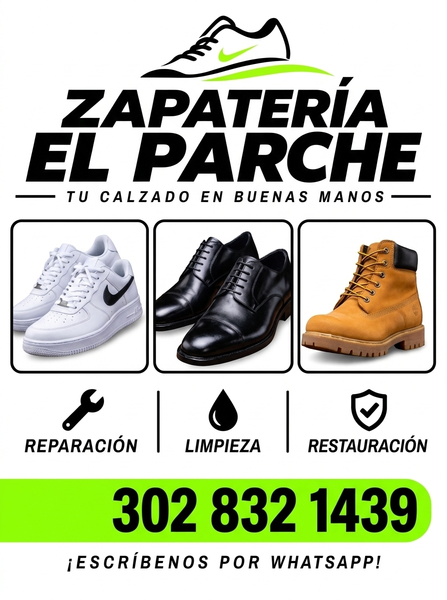

DEVOLVEMOS LA VIDA A TUS ZAPATOS Y SNEAKERS
Taller profesional artesanal. Arreglamos, lavamos a fondo y restauramos tenis deportivos, zapatos de vestir y botas de trabajo con acabados impecables y duraderos.

Soluciones completas para tu calzado
Utilizamos insumos de grado profesional, pegantes vulcanizados y productos especiales para no dañar los materiales originales.
REPARACIÓN
Devolvemos la estructura y firmeza a tu calzado favorito para que camines con total comodidad y seguridad.
- ✓ Cambio de suelas completas y medias suelas
- ✓ Tapas antideslizantes para tacones y botas
- ✓ Costuras de alta resistencia invisibles y reforzadas
- ✓ Pegado vulcanizado con prensado térmico
- ✓ Ajuste de horma, ensanchado y plantillas ortopédicas
LIMPIEZA
Lavado profundo a mano especializado en sneakers y calzado fino. Desmanchamos sin decolorar.
- ✓ Lavado profundo artesanal exterior e interior
- ✓ Blanqueamiento y desamarillado de mediasuelas (Un-yellowing)
- ✓ Tratamiento de cordones y plantillas
- ✓ Desinfección bacteriana y desodorización activa
- ✓ Cuidado delicado de gamuza, nobuk, lona y malla
RESTAURACIÓN
Renovamos el color, textura y acabado de calzado desgastado o deteriorado por el paso del tiempo.
- ✓ Tintura integral y cambio de tono profesional
- ✓ Reparación de raspaduras y peladuras en cuero
- ✓ Hidratación profunda con ceras y aceites naturales
- ✓ Aplicación de repelente impermeable contra agua y mugre
- ✓ Restauración de punteras, ribetes y talones
Trabajamos todo tipo de material y silueta
Cada tipo de zapato requiere una técnica, aguja y compuesto adhesivo específico.
Tenis Deportivos y Urbanos
Nike Air Force, Jordan, Adidas, Vans, Converse, running y calzado de diario. Limpieza de suela blanca, parches y pegado flexible.
Zapatos de Vestir y Oficina
Oxfords, mocasines, botines ejecutivos y charol. Cambio de tapas finas, suelas de cuero legítimo, brillo espejo y costuras de zapatero.
Botas de Trabajo y Montaña
Timberland, Caterpillar, botas tácticas y motociclismo. Suelas tractoradas antideslizantes, remaches, impermeabilización y costuras ultra resistentes.
Atención continua desde la mañana hasta la tarde
Entendemos tu ritmo de vida y tus compromisos. Por eso abrimos todos los días, de lunes a domingo y días festivos para que nunca te quedes varado con tu calzado.
Horario de hoy: 8:00 AM - 7:00 PM
Cronograma Semanal
- Lunes a Viernes 8:00 AM — 7:00 PM
- Sábados 8:00 AM — 7:00 PM
- Domingos 9:00 AM — 5:00 PM
- Festivos 9:00 AM — 4:00 PM
¿Cómo llegar a Zapatería El Parche?
Presiona el botón para abrir la ruta directa en Google Maps en tu celular o computador y llegar sin perderte.
Dirección del Taller
Cl. 10A #11-4, Maicao, La Guajira
Zona de fácil acceso con parqueadero cercano para motos y carrosCotiza tu calzado en 1 minuto
Selecciona tu tipo de calzado y lo que necesitas. Te enviaremos el mensaje pre-armado a nuestro WhatsApp oficial.